LL, RR, RL, LR rotations in AVL Tree
Before we procedd witht exmaples of the rotations we learned, we should know how a binary search tree
that is unbalanced can be balanced with a few Rotate Operations.
Rotate Operations
We can perform Rotate operations to balance a binary search tree such that the newly formed tree
satisfies all the properties of a binary search tree.
Following are the two basic Rotate operations.
- Left Rotate Operations
- Right Rotate Operations
Left Rotate Operations
- In this operation, we move our unbalanced node to the left.
- Consider a binary search tree given below, and the newly formed tree after its left rotation
with respect to the root.
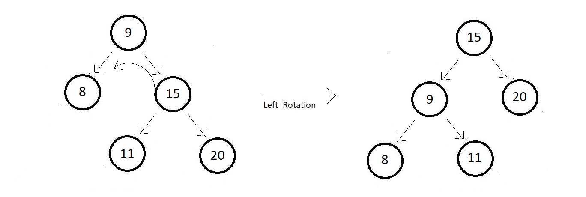
- One thing to observe here is that node 11 had to change its parent after the rotation to be
able to maintain the balance of the tree.
Right Rotate Operations
- In this operations, we move our unbalanved node to the right.
- Consider a binary search tree given below, and the newly formed tree after its right
rotation with respec to the root.
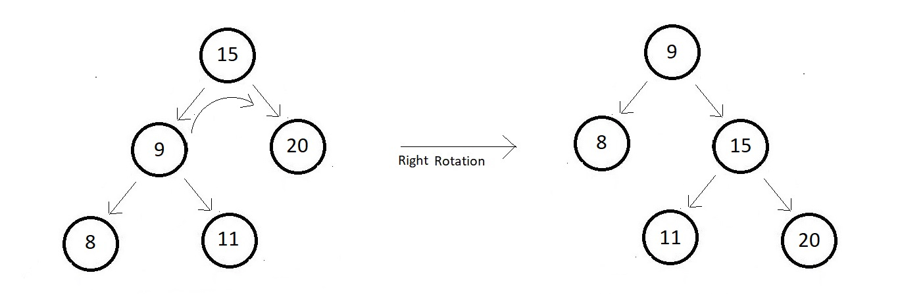
- You can see that node 11 had to change its parent after the rotation to be able to maintain
the balance of the tree.
- And rotating a tree to its left, and tahen again to the right, yields the same original tree
as you can see from the above two examples.
We learned the rotation so let's apply it on AVL tree to balance it.
We can follow the below-mentioned rules.
- For Left-Left insertion ↓
- Right rotate once with repect to the first imbalance node.
- For Right-Right insertion ↓
- Left rotate once with respect to the first imbalance node.
- For Left-Right insertion ↓
- Left rotate once and then Right rotate once.
- For Right-Left insertion ↓
- Right rotate once and then left rotate once
We'll now see how a complex tree gets balanced again after an insertion.
Consider the binary
search AVL tree below:
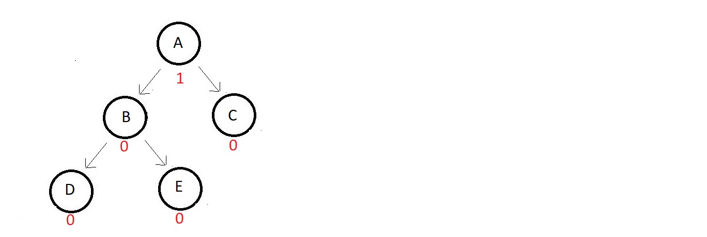
- The absolute balance factor of each node is written beside, and you can see how balanced the
values are.
- Now suppose we need to insert an element that gets its position to the right of node D.
- Now the updated tree tooks something like this.
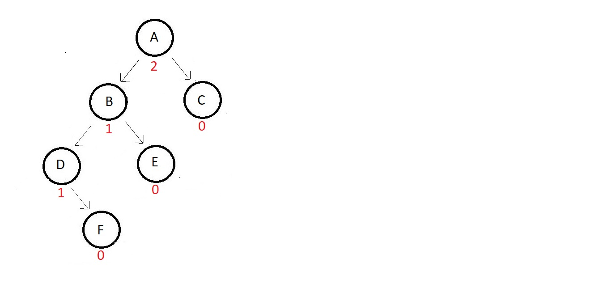
And the tree got imbalanced. Now, you follow these steps.
- First search for the node which got imbalanced first.
- start iterating from the node we inserted at and move upwards looking for that first
imbalanced node.
- Here node A is the one we were searching for.
- What type of insertion occured?
- Here, the insertion happened to the left to the left of node A.
- So, this belongs to the first rule we saw above.
- Follow the rule
- Right rotate once with respect to the first imbalance node. So, the tree after
rotating to the right becomes
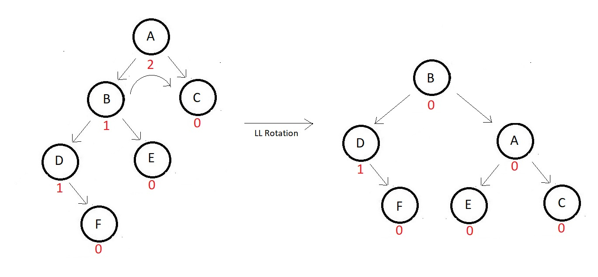
LL Rotation ↓
- use to balance a relatively complex AVL tree.
- Consider the one given below
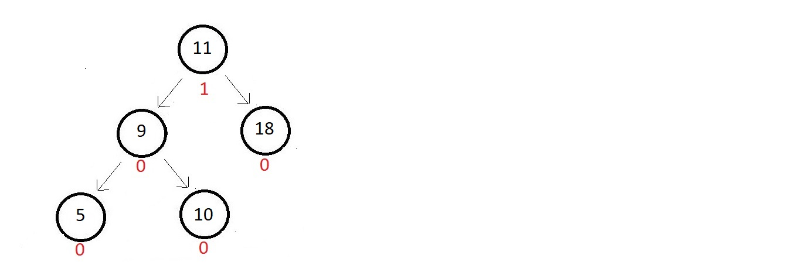
- Absolute balance factors of each of the nodes are written beside.
- Inserting a node with data 4
- it would get inserted to the left of node 5.
- The updated tree and balanced factors are:
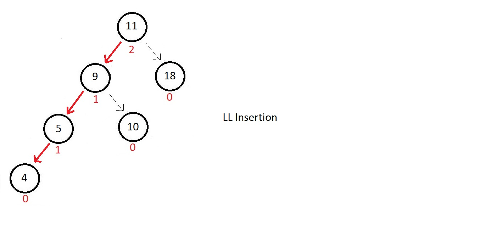
- This is a case of left-left insertion
- So, we would rotate right once with respect to the root node, since that's the first
one to get imbalanced.
- And in that process, we might lose the position of node 10.
- So, we give it a new position to the left of node 11 to accomodate it again into the
tree.
- And our tree gets balanced again
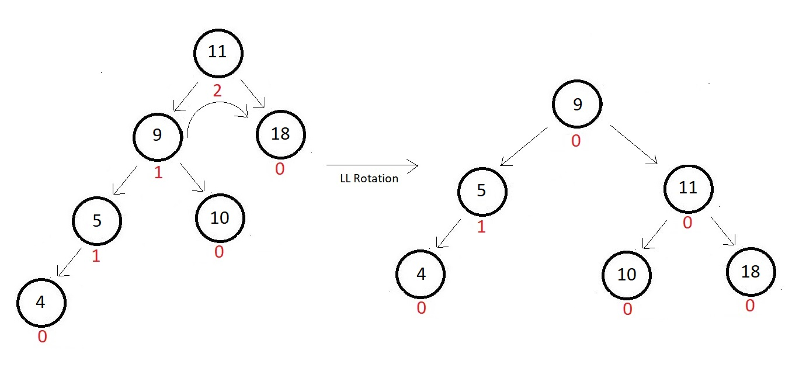
RL Rotation ↓
- used to balance a relavtively complex AVL tree.
- Consider the one given below
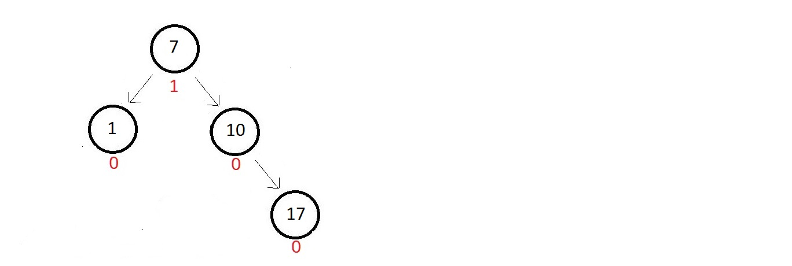
- The absolute balance factors of each of the nodes are written beside.
- want to insert a node with data 16.
- So, that would get inserted to the left of node 17.
- The updated tree and their balance factors are:
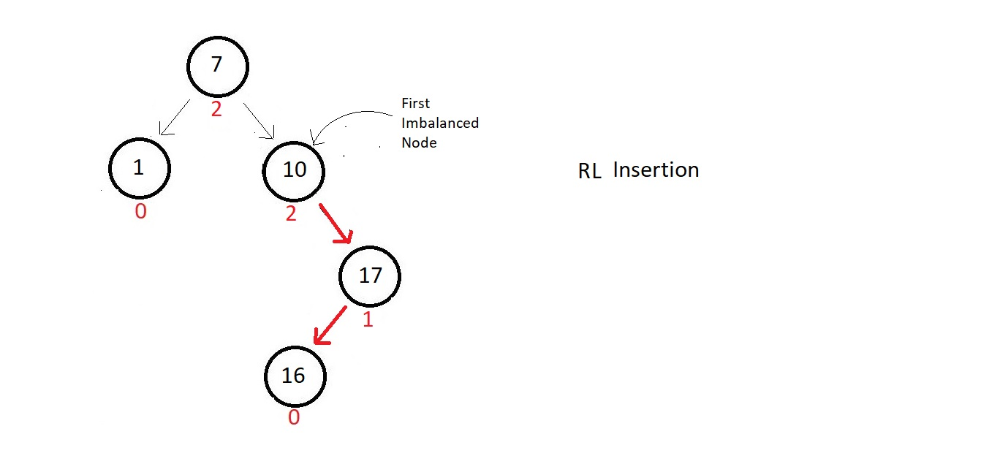
- This is a case of right-left insertion with respect to the first imbalanced node which is
node 10.
- We would first rotate right once with respect to the child of the first imbalanced node
which comes into the path of the insertion node.
- Follow the figure
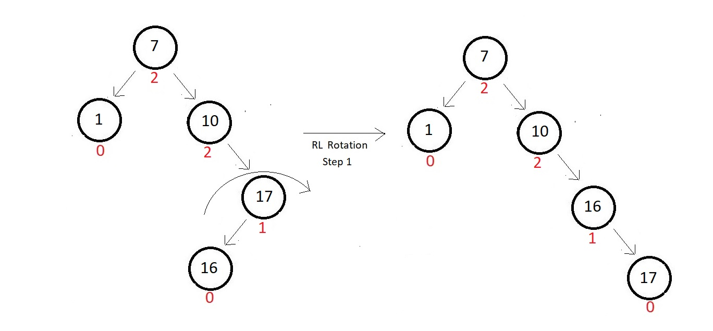
- Now rotate left with respect to the node we found first imbalanced, here 10. And this would
do our job. Our tree get balanced again.
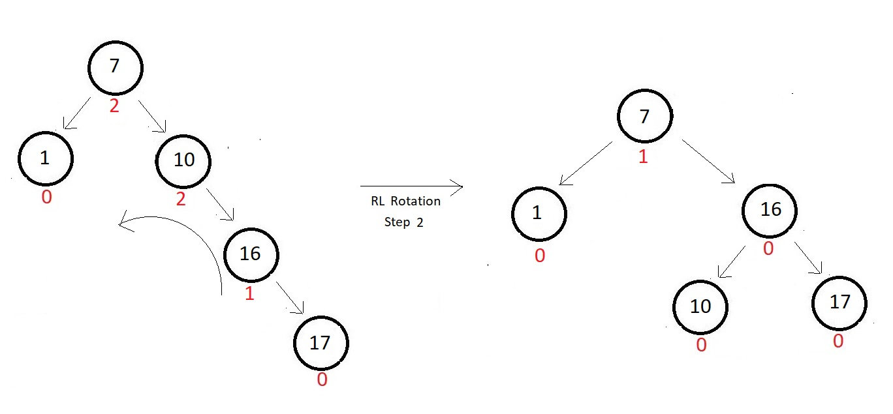